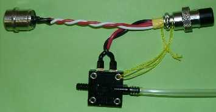
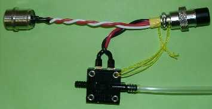
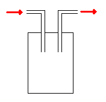
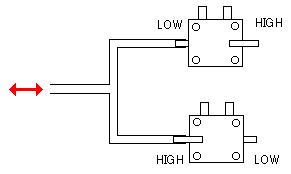

かならずお読みください→
呼気式ナースコールスイッチ
 

特徴
スイッチ操作のための動作が困難な場合でも操作可能
揺動式エアマット使用者に対応が比較的容易
材料
World Magnetics社，呼気スイッチ，ＰＳＦ１００Ａ，１個 （現在当方では販路が確保されておりません）
World Magnetics社のサイトに日本代理店の記載があります．また同等のスイッチとして，ＭＰＬ社の５００シリーズがあり，こちらのサイトにも日本代理店の記載があります．こちらから入手が可能と思われます．(04/09/07)
ホース（熱帯魚用品，ホームセンターで入手可能）
電線，１ｍ．（古いナースコールスイッチの電線を再利用しています．）
その他
工具
はんだごて，ハンダなど
作り方
１．配線
呼気スイッチの端子にナースコールコネクタにつながる電線をハンダつけし，絶縁します．
２．ホースの取り付け
呼気スイッチからは２本のパイプが出ていて，片方には LOW もう片方には HIGH の刻印があります． LOW の方は吸ったとき， HIGH の方は吹いたとき，呼気スイッチが働きます．（短絡，ＯＮ） 用途に合わせて，ホースをつなぎます．
さらに改善
唾液が呼気スイッチに入ると故障の原因になると思われます．
吸って（吸気で）操作する場合はそれほどでもないでしょうが，吹いて（呼気で）操作する場合，そして唾液が多い方には注意が必要です．
唾液の対策として，下の図のようなセパレータ（気液分離器）をホースの途中に追加します．また呼気スイッチ自体は，高い位置に置くように注意します．

吹いても吸っても操作できる場合には，呼気スイッチを２個，図のように使うと，２種類の操作（ナースコールの他に，環境制御装置や意思伝達装置など）が出来ます．

顔面を動かせる方なら，酸素吸入用のホースを使い，あご部分にホースの先端に来るようにすると，吹き口が常に口元にあるため，揺動式の耐圧分散マットに対しても，問題なく使用できます．

補足：ベッドなどからアームを伸ばして，ホース先端を口元に固定する方法では，揺動式耐圧分散マットの使用によって，顔が左右に揺れるため，角度によって，時間によって，ホース先端に口が届かなくなることがあります．上のような方法でこれは解決できます．また，使用者の胸に台を置き，そこからホースを伸ばす方法も考えられます．
予測される危険性
このナースコールスイッチを使用するに際して，ホースの外れや詰まりに注意する必要があります．特に看護作業中にホースが外れる危険性があります．また長期間使用すると，唾液やほこり，異物などによりホースが詰まる危険性が考えられます．そのほかの故障を事前に察知するために，定期的に目視による点検，試験的に動作させる点検などが必要です．
使い方
上肢や首などにの動きがある方なら，ロッド型ナースコールスイッチの方が適している場合が多いようです．一般に呼気スイッチは，より重度の方がお使いになるようです．
また，人工呼吸器をご使用の方でも，口の中の空気を頬で押し出す（または吸い込む）ことで呼気スイッチを操作出きる場合があります．（ストローでジュースを吸う要領です）
ひとこと
呼気スイッチにはひとつ不安に思うところがあります．もしせき込んでいた場合，うまく使えるでしょうか？せきの勢いで吹けるのでしょうか？実際使っている人にこのことを尋ねてみましたが，はっきりした答えはもらえませんでした．
ナースコールを操作するときは，その人はあまり良くない状況にあるはずです．せき込む場合は注意が必要と考えます．
2018/3/19 UTF-8 に変更
04/09/07 圧力スイッチメーカについて追記
03/05/15 公開
研究企画課リハ工学科にもどる